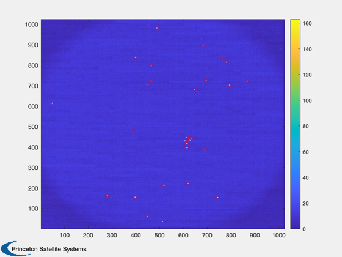
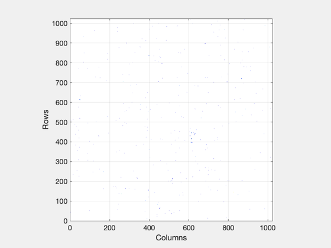
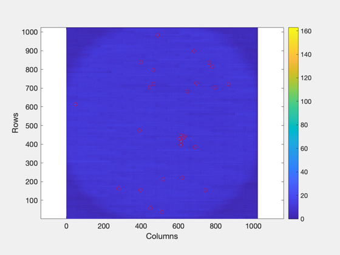
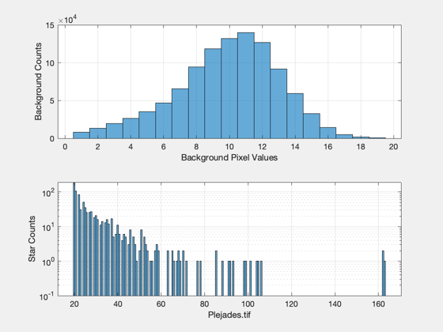
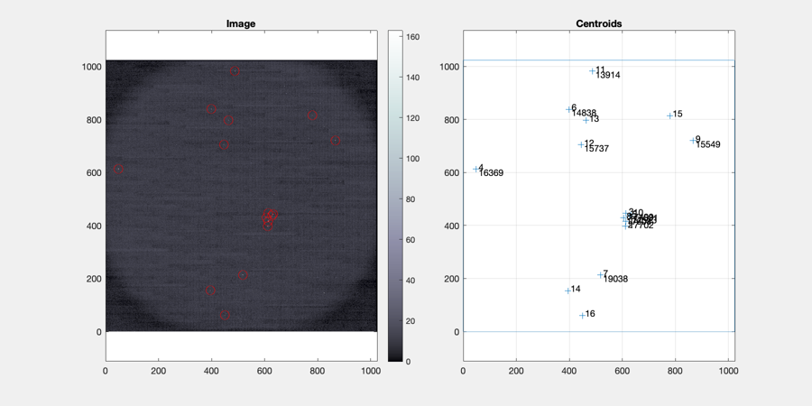
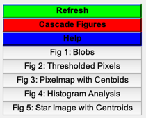

Contents
Pyramid Star ID from a camera image
The focal length scaling must be known to high precision to successfully identify stars from a real image. The steps are written out here to be instructive but also see the listed support functions.
This demo identifies stars in a image of the Pleiades cluster, including some of its brightest stars:
17702: Alcyone, brightest star in the Pleiades, magnitude 2.86 17499: Electra, magnitude 3.7 17573: Maia, magnitude 3.86 17608: Merope, magnitude 4.17 17531: Taygeta, magnitude 4.29
See also: LoadStarImage, FitHist, CoarseCentroids, ProcessCatalog, ProcessStarImage, StarIDPyramid, DrawStarImageCentroids
%-------------------------------------------------------------------------- % Copyright (c) 2008 Princeton Satellite Systems, Inc. % All rights reserved. % Since 2019.1 %-------------------------------------------------------------------------- disp('Demo of StarIDPyramid, real image --')
Demo of StarIDPyramid, real image --
Info on the camera used to take the test image
nPixels = 1024; % image width in pixels, square in this case pixWidth = 15; % pixel size in microns fLength = 43.169; % focal length in mm % calculation field of view and scaling fOV = 2*atan(0.5*nPixels*pixWidth*1e-3/fLength); fScale = fLength/(pixWidth*1e-3); pixRes = fOV/nPixels;
Star catalog with appropriate limits
jD = Date2JD([2016 1 1]); minInt = 6; % minimum intensity angRes = 5*pixRes; % minimum resolution between stars starData = ProcessCatalog( minInt,fOV,angRes,jD);
Keeping 2469 brightest stars across FOVs
Process a stored image
[pixels,d.img] = LoadStarImage( 'Plejades.tif', []); nROI = 5; % size of region of interest in pixels % find the sky background in the image for thresholding [bNoise,R] = FitHist( pixels ); % compute the centroids optCOM = CoarseCentroids; optCOM.T = bNoise + 3*R; optCOM.nROI = nROI; optCOM.b = bNoise; [r0, iC, dCOM] = CoarseCentroids( pixels, optCOM, true );
Blob combine operations: 1  
Identify stars
options = StarIDPyramid;
options.pixelMapScale = fScale;
options.angleTolerance = 1.5*pixRes;
% transform centroids to center of image
starMeas = struct;
starMeas.pixelLocation = r0-nPixels/2;
starID = StarIDPyramid( starMeas, starData, options );
Display results
Hipparcos IDs of the stars
hipID = starData.starCatalog.name4(starID(starID~=0)); starID(starID~=0) = hipID; fprintf('Star IDs: %s\n',num2str(hipID)); StarImageHistogram( pixels, 'Plejades.tif', dCOM.T ) DrawStarImageCentroids( pixels, r0(:,1:16), starID ); Figui; %--------------------------------------
Star IDs: 17702 17499 16369 17573 14838 19038 17608 15549 17531 13914 15737  